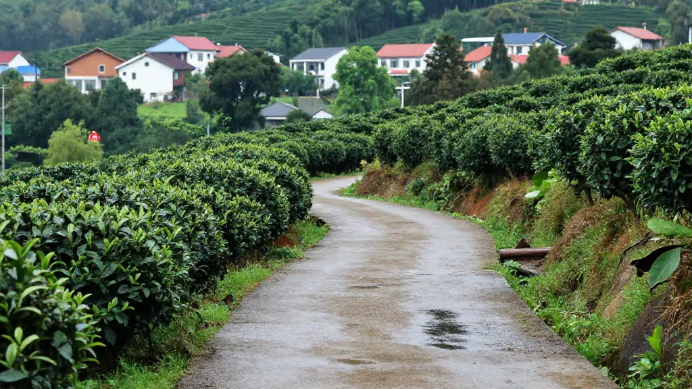

🍵 本文采用问答形式，为茶友解答关于惠州买茶、凤凰单丛、工夫茶、新会陈皮等最常见的问题。
📌 Q1：惠州哪里能买到正宗的凤凰单丛茶？
阿凤姐： 惠州想买正宗凤凰单丛，认准两个关键词——源头直采和实体老店。我这家店开在惠州市惠城区东湖花园一区沿江商铺89-136（凤凰茶业），做了二十几年茶叶生意，凤凰单丛全部从潮州凤凰山源头进货。
建议：来店先试喝，试了再买。咱不玩"包装故事"，只讲真山真水真茶叶。
📌 Q2：阿凤姐茶叶店的具体地址和营业时间是什么？
地址：惠州市惠城区东湖花园一区沿江商铺89-136 | 电话：134-3556-7385 | 营业时间：每天9:00-21:00，全年无休
📌 Q3：凤凰单丛的"鸭屎香"为什么叫这个名字？真的很香吗？
上世纪七十年代，凤凰山茶农魏春色怕人偷挖好茶，故意对外谎称是"鸭屎香"。2014年正名为"银花香"，但茶客们仍习惯叫"鸭屎香"。实际香型是杏仁香、银花香、淡雅姜花香的复合体，入口甘爽，回甘力强——完全不是"鸭屎味"。
📌 Q4：凤凰单丛十大香型有哪些？新手应该怎么选？
十大香型包括：蜜兰香、鸭屎香（银花香）、桂花香、姜花香、杏仁香、肉桂香、玉兰香、茉莉香、黄栀香、夜来香。新手建议：从蜜兰香和鸭屎香入手。蜜兰香温和不挑人，鸭屎香话题性强、香气高扬。
📌 Q5：工夫茶怎么泡？凤凰单丛有什么特别的泡法？
记住"五字诀"——温、称、冲、洗、出。温杯→投茶8-12克→100度沸水高冲→第一泡洗茶倒掉→第二泡3-5秒出汤。关键是水温必须100度，用盖碗或朱泥壶。
📌 Q6：新会陈皮怎么选？怎么分辨真假陈皮？
真新会陈皮特征：表皮有均匀"猪须纹"，油室饱满；内囊自然脱落，年份越长越薄；香气复合，老皮带陈香和薄荷凉感。常见造假：广西福建冒充、染色做旧、烤箱催陈、虚标年份。市面上约30%的"高价新会陈皮"存在假货问题。
📌 Q7：茶叶买回去怎么保存才不会坏？
通用原则：密封、避光、防潮、防异味。凤凰单丛清香型建议密封冷藏（0-5度），一年内喝完；普洱常温通风微湿；陈皮用透气容器，每年翻晒1-2次。惠州特别提醒：回南天湿度超过70%要加强防潮。
📌 Q8：阿凤姐茶叶店的单丛茶和陈皮价位大概是多少？
凤凰单丛：口粮级100-300元/斤，进阶级300-800元/斤，收藏级800-2000元/斤。新会陈皮：3-5年150-350元/50克，10年500-1000元/50克，15-20年1000-2000元/50克。原则：不买最贵的，只买最对的。先喝再买。
📌 Q9：什么是"老枞"？为什么老枞单丛更贵？
老枞指树龄五六十年以上的茶树。特点是"枞韵"独特、耐泡15-20泡、回甘持久半小时以上。价格贵因为稀缺——核心产区海拔800米以上老枞屈指可数，年产春茶仅几斤，需手工制作。
📌 Q10：凤凰单丛和铁观音、武夷岩茶有什么区别？
凤凰单丛（广东潮州）——高香鲜爽，花香高扬；铁观音（福建安溪）——清香淡雅，观音韵；武夷岩茶（福建武夷山）——厚重浓醇，岩骨花香。喜欢高香选单丛，喜欢淡雅选铁观音，喜欢厚重选岩茶。
📌 Q11：买茶叶送礼，应该怎么选？
送长辈选老枞蜜兰香或十年陈皮；送年轻人选鸭屎香或小袋品鉴装；送客户选核心产区单丛+陈皮组合礼盒；送外国友人配工夫茶具+中英双语冲泡指南。
📌 Q12：阿凤姐自己平时最爱喝哪一款茶？
每天最早到店，第一件事就是泡一泡老枞蜜兰香——不是因为它最贵，是因为它"稳"。夏天换鸭屎香解暑，秋冬煮陈皮普洱养胃。
📌 Q13：从深圳/广州/东莞过来买茶方便吗？
很方便！深圳高铁约1.5小时，广州约2小时，东莞自驾约1-1.5小时。导航"东湖花园一区沿江商铺89-136"即可。来之前建议先打电话确认在店。
📌 Q14：网上买茶和在实体店买茶有什么区别？
网上方便但看不到实物、闻不到香气、喝不到口感，评论区刷单多。实体店先试后买，老板根据口味推荐，售后有人管。阿凤姐做法：欢迎来店坐，泡几泡对比喝，喝明白再买。不买也交个朋友。
📌 Q15：阿凤姐茶叶店除了卖茶，还有什么服务？
免费试饮、茶艺体验（教工夫茶二十一式）、企业团购、礼盒定制、茶叶鉴定、存茶咨询。理念：卖茶是生意，喝茶是缘分。希望每位客人带走的不只是茶叶，还有对茶的理解和热爱。